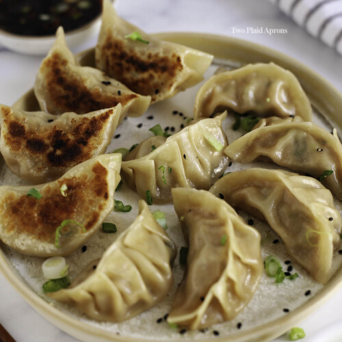

Home
Pork Dumplings Recipe
Pork Dumplings

Description
Dumplings originated from China.
They are pieces of cooked dough, wrapped around meat.
They can also be madewith vegetables in place of the meat.
Dumplings can be steamed or fried.
Ingredients
- 100 (3.5 inch square) wonton wrappers
- 1 ¾ pounds ground pork
- 1 tablespoon minced fresh ginger root
- 4 cloves garlic, minced
- 2 tablespoons thinly sliced green onion
- 4 tablespoons soy sauce
- 3 tablespoons sesame oil
- 1 egg, beaten
- 5 cups finely shredded Chinese cabbage
Steps
- Combine pork, ginger, garlic, green onion, soy sauce, sesame oil,
egg and cabbage in a large bowl. Stir until well mixed.
- Place 1 heaping teaspoon of pork filling onto each wonton skin.
Moisten edges with water and fold edges over to form a triangle shape.
Roll edges slightly to seal in filling.
Set dumplings aside on a lightly floured surface until ready to cook.
- Arrange dumplings in a covered bamboo or metal steamer so they don't touch
to prevent them from sticking together; steam until pork is cooked through,
about 15 minutes.
- Serve hot and enjoy!